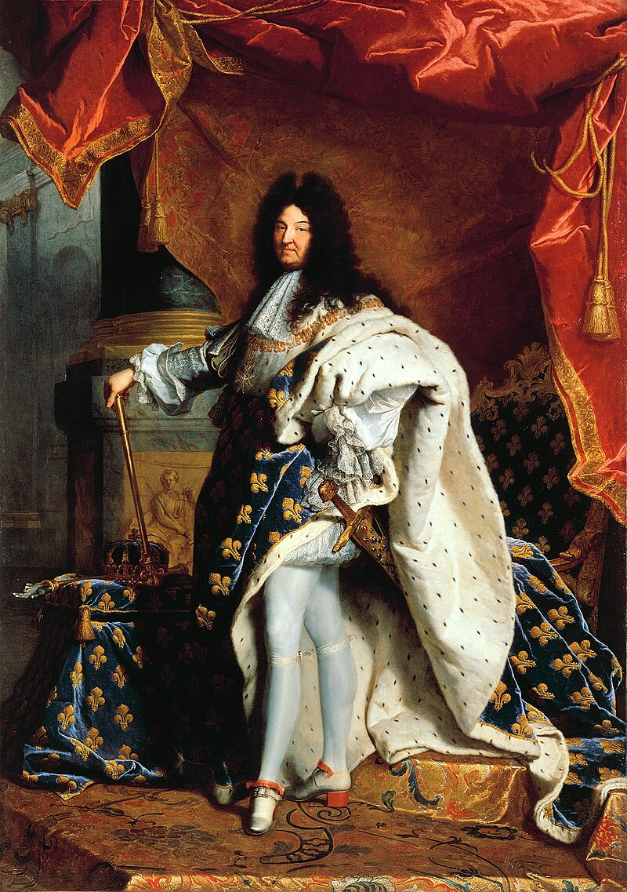

Durante a Idade Moderna, dois conceitos fundamentais marcaram a organização política e econômica da Europa: o Absolutismo e o Mercantilismo. Ambos estiveram diretamente ligados à consolidação dos Estados Nacionais e à centralização do poder nas mãos dos reis.
O Absolutismo foi um sistema político em que o poder do rei era centralizado e praticamente ilimitado. Os monarcas absolutos governavam sem a necessidade de consultar parlamentos ou outras instituições representativas.
Características principais:
Exemplos de monarcas absolutistas: Luís XIV (França), Henrique VIII (Inglaterra), Pedro, o Grande (Rússia).

O Mercantilismo foi um conjunto de práticas econômicas adotadas pelos Estados europeus entre os séculos XV e XVIII. Seu principal objetivo era o fortalecimento do Estado por meio do acúmulo de riquezas, especialmente metais preciosos.
Princípios do mercantilismo:

O absolutismo e o mercantilismo estavam interligados: enquanto o absolutismo garantia a centralização do poder político, o mercantilismo fornecia os recursos econômicos necessários para manter esse poder. Juntos, esses sistemas sustentaram a formação dos Estados Nacionais modernos.
Compreender o absolutismo e o mercantilismo é essencial para entender a transição da Idade Média para a Idade Moderna, bem como os processos que levaram à Revolução Industrial e à formação do capitalismo moderno.